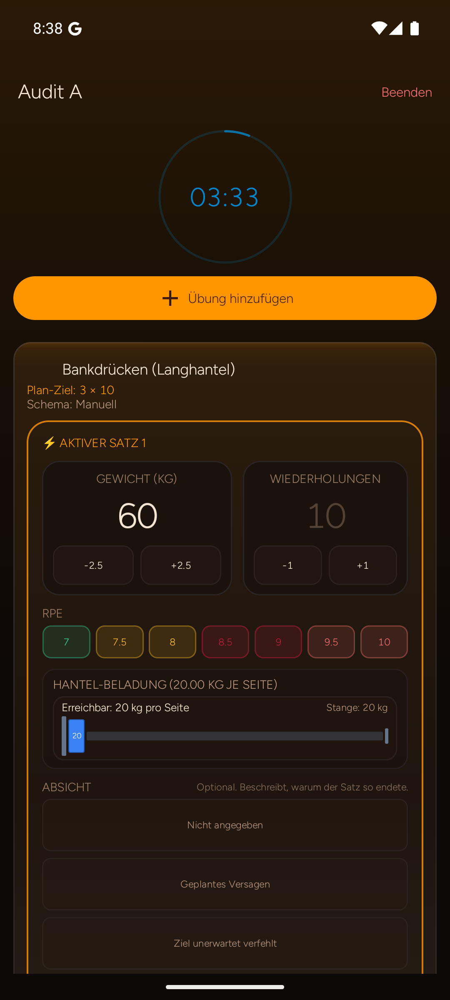

IRONLOG / UX-AUDIT · ANDROID
Den nächsten Satz direkt bestätigen
Kompakte Satzzeilen halten Vorwert, Eingabe und Abschluss in einer Handbewegung zusammen.
01 / 07
Vorher · Original
Android / 1080×2400
Nach 60 kg Eingabe liegt die Bestätigungsaktion außerhalb der sichtbaren Fläche. Der Befund ist im Audit praktisch belegt.
Nachher · Entwurf
Einhand-Logging09:41▮▮▮ 86%
Aktive Übung
Bankdrücken
Arbeitsgewicht · aus diesem Training übernommen
60 kg × 10gerade geloggt · Satz 1
Übernahme01
60 kg
10
Arbeit
02
60 kggerade geloggt
10editierbar
—
03
—
—
—
RPE / RIR · Satztyp · Scheibenrechner
Optional: RPE 8 · RIR 2 · Arbeitssatz · Scheiben pro Seite 17,5 kg
01 / FOKUS
Übernahme mit Herkunft
Satz 2 startet mit 60 kg × 10. Die Quelle „gerade geloggt“ bleibt sichtbar und ist vor dem Speichern editierbar.
02 / DICHTE
Drei Zeilen, ein Blick
Erledigt, aktiv und offen stehen gemeinsam im sichtbaren Bereich. Keine zusätzliche Vollbild-Eingabe pro Satz.
03 / DETAILS
Komplexität auf Abruf
RPE/RIR, Satztyp und Scheibenrechner bleiben erreichbar, blockieren aber nicht die Hauptaktion.
Abnahmeziel
60 × 10 für Satz 2 ohne erneute Gewichtseingabe und ohne Scrollen bestätigen.